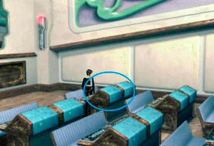
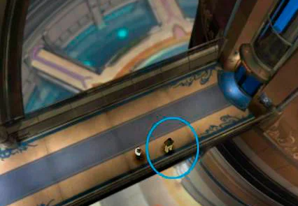
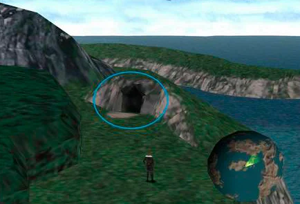
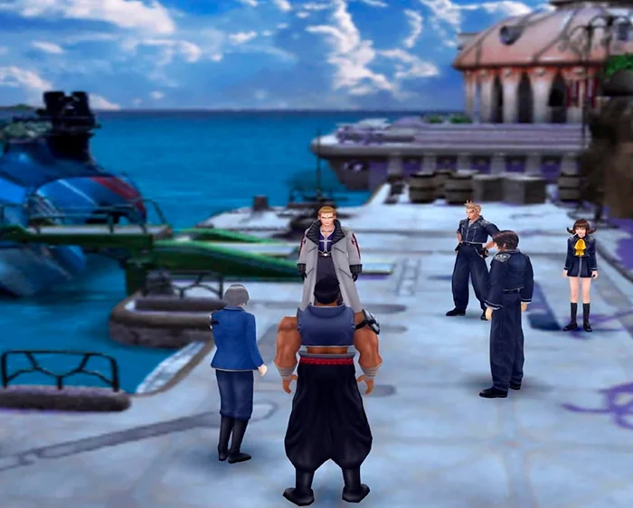

Jardin de Balamb
Una vez que despiertes en la enfermeria ,luego de la secuencia, sigue a Quistis por el pasillo hasta ver otra escena mas. Cuando termine de hablar en el aula y te pida que hables con ella, siéntate en tu pupitre interactuando con él. Selecciona "Antes que nada, a encender la máquina" y luego "Guía". Recibirás a los G.F. Shiva y Quetzal. Abandona el pupitre y habla con Quistis.
Después de hablar con Quistis, abandona el aula. Si es tu primera vez, te recomendamos que escojas "De acuerdo" al chocarte con la chica. Esto te permitirá conocer un poco más el Jardín de Balamb. Antes de coger el ascensor habla con el tipo que está en la pasarela. Conseguirás tus primeras cartas de Triple Triad. Aún no vamos a meternos en ese asunto.
Baja en el ascensor y ve recto hacia la parte inferior de la pantalla hasta abandonar el Jardín. Quistis te dará el tutorial sobre Enlazar G.F., y cómo equipar habilidades. Presta atención, porque es la mecánica básica del juego para mejorar los atributos de tus personajes. No te preocupes, es muy intuitivo. Enlaza a Shiva con Squall y a Quetzal con Quistis y equipa las habilidades Magia, G.F y Extraer. El A-B-C del juego, vaya. Salimos del Jardín. Date una vuelta y lucha con monstruos para subir un par de niveles, pero ten cuidado con el Arqueosaurio si te metes en los bosques. Cuando estés listo, dirígete al punto que te señalamos en la imagen. Guarda antes de entrar.
Al entrar, Quistis te dará el tutorial sobre enlace y el uso del gatillo del sable pistola. Acércate a los tipos del sombrero amarillo, responde "Sí" y luego escoge el tiempo que quieras. Es el tiempo límite que tienes para llegar hasta el jefe y derrotarle. Entre menos tiempo elijas y mas rapido lo completes, mejor el rango SeeD que te daran mas adelante. Se trata de una mazmorra simple, tan solo tienes que avanzar por dos pantallas hasta llegar al jefe Ifrit. No te pares a luchar con enemigos para extraerles magia, puedes hacerlo después y conseguir mas puntos de SeeD.
Jefe - Ifrit
- Vida: 1068
- Vulnerable: Hielo
- Resistente: Fuego
- Recompensa: Resucitador G.F.x3 / Carta de Ifrit
- Extraccion: Cura, Piro, Libra
- Estrategia: Para derrotar a Ifrit, deberás utilizar el G.F Shiva y las magias de Hielo cuanto puedas. No es extremadamente difícil, pero puede llevar su tiempo.
Conseguirás la Carta de Ifrit al derrotarle, Ifrit decidira unirse a tu grupo como un G.F. y como no podía ser de otra manera, Quistis nos dará una clase sobre enlaces elementales. Después, regresa al Jardín de Balamb. Un último tutorial sobre las habilidades que pueden aprender los G.F. y listo. Entra en el Jardín y rodea el anillo del ascensor para ir por el pasillo del extremo norte, el de la franja marrón, para llegar a tu dormitorio, interactúa con la cama y selecciona Me cambiaré. Ha llegado la hora de superar el Examen de Seed.
Verás una secuencia al salir de tu cuarto. Tendrás que ir en coche siguiendo la carretera hasta Balamb. Por el momento no tienes libertad para explorar más allá de hacerlo solo, así que entra en el barco que espera en el puerto. Un par de momentos después, estarás en Dollet